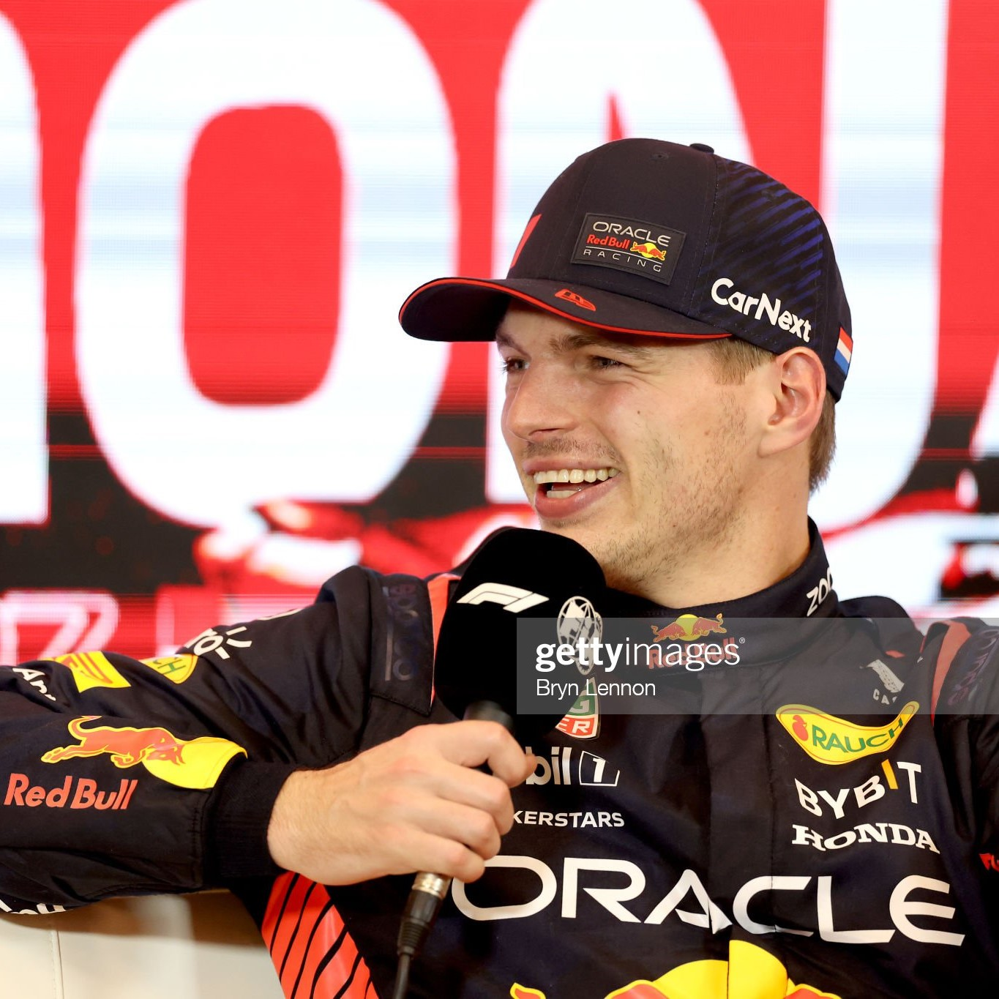

Foto: Getty Imagens
-27/05/2023-
Finalmente temos o grid do GP de Mônaco e mais uma vez temos a pole de Max Verstappen, a primeira dele em Mônaco e a primeira em um circuito de rua.
Naquele momento, a pole não era dele, e a maioria de nós nem acreditava que seria possível. Inclusive, a Aston Martin já estava comemorando quando Fernando Alonso fez o melhor tempo, com os dois primeiros setores roxos. No entanto, Max, em sua última tentativa com o cronômetro zerado, fez a volta perfeita e cravou 1:11.365, garantindo mais um check no caderninho dos circuitos. Fechando a primeira fila, temos Fernando Alonso, que pode e quer muito ser vencedor.
Na segunda fila, temos Charles Leclerc (por enquanto, pois ele está sob investigação por atrapalhar Lando Norris) e Esteban Ocon, que chegou a ser P1 por um tempinho. A puxada de orelha valeu a pena, hein Alpine? Até porque o companheiro de equipe, Gasly, está em sétimo.
Dia positivo também para a Alpha Tauri, que larga com Tsunoda em P9 e Nyck De Vries em P12 (melhor posição de largada até aqui).
Destaque negativo para Lance Stroll, que larga em P14, e Sergio Perez, que bateu nos primeiros minutos do qualifying e está apenas em P20!
Ah, Karol, não vai falar das Mercedes?
Não, obrigada! É muita decepção para o meu coraçãozinho.
Amanhã, a previsão é de chuva, o que pode embaralhar um pouco as coisas. Bom, ou a chuva ou Fernando Alonso, caso não tenhamos nenhum dos dois, bem-vindos a mais uma procissão...